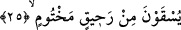
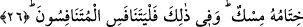

olmayacaktır.
İmam Cafer Sadık bu âyet-i kerimeyi şöyle tefsir ediyor: Allah’ı ziyaretten
köşklerine döndüklerinde yüzlerinin Cemalullaha bakma lezzetinden dolayı güneş gibi
pırıl pırıl parladığını farkedersin.
Bazı âlimler ise bu âyeti; “sen onların yüzlerinde sevgililerinin kendilerinden
hoşnutluğunu farkedersin” şeklinde tefsir etmişlerdir.
25. Kendilerine mühürlü hâlis bir içki sunulur.
Bu âyet, onların nimetlerine dâir üçüncü özelliği oluşturmaktadır. Burada sanki saf ve
hâlis içkiden bir parça içirilmiştir; yahut malum bir miktar içirilmiştir, denmek
isteniyor. Bir başka ifâdeyle; onlara mühürlü rahîktan (saf içkiden) yapılmış bir
meşrubat sunulur, denmiş oluyor. “Rahîk”; saf ve katıksız şarap demektir. Buna göre
âyete mânâ verecek olursak şöyle deriz: Onlara Cennette içinde hiçbir yabancı karışım
olmayan, nefsi rahatsız etmeyen, insanın içini bulandırmayan, yapısı bozulmayan, dünya
içkilerine benzemeyen, başağrısı yapmayan bir içki içirilir.
26. Onun içiminin sonunda misk kokusu vardır. İşte yarışanlar ancak onda
yarışsınlar.
“Onun mühürü misk’tir.” Yani onun ağzına vurulan mühür, misktir. Misk, bildiğimiz
güzel kokunun adıdır. Buna göre âyette denmiş oluyor ki; o içkinin kabı ve kadehleri
toprak yerine misk ile mühürlenmiştir.
Keşfu’l-esrar’da ifâde edildiğine göre mühürde kullanılan misk kokusu yumuşak bir
koku olup mühür vurulmaya elverişlidir. Allah Teâlâ onlara sunulacak içkinin ağzına
mühür vurulmasını, bunları içecek kimselere ikram etmiş olmak için emretmiş ve
onların içecekleri içki misk ile mühürlenmiştir. Böylece ebrar, onun mührünü çözmeden
önce kendisine hiçbir elin dokunması ve ellemesi engellenmiştir. Ağır basan ihtimale
göre “onun mührü misktir” ifâdesi, içilecek içkinin nefasetinin mükemmelliğinin temsîlî
yoldan anlatımıdır. Çünkü nefis olan bir şey mühürlenir. Özellikle bu nesnenin ağzına
toprak yerine misk ile mühür vurulmuşsa ne kadar nefis olduğu daha da ortaya çıkar.
Bazı âlimlere göre “hitamu’ş-şey”, herhangi bir şeyin sonu demektir. Buna göre
“hitamuhu misk” ifâdesinin mânâsı, “onun mührü misktir” şeklinde değil de “onun sonu
misktir” şeklinde olur. Çünkü içkiyi içen kimse ağzını en son yudumu alıp da ondan
kaldırdığında misk kokusu gibi bir koku alacaktır. Misk kokusu içtiği nesneye